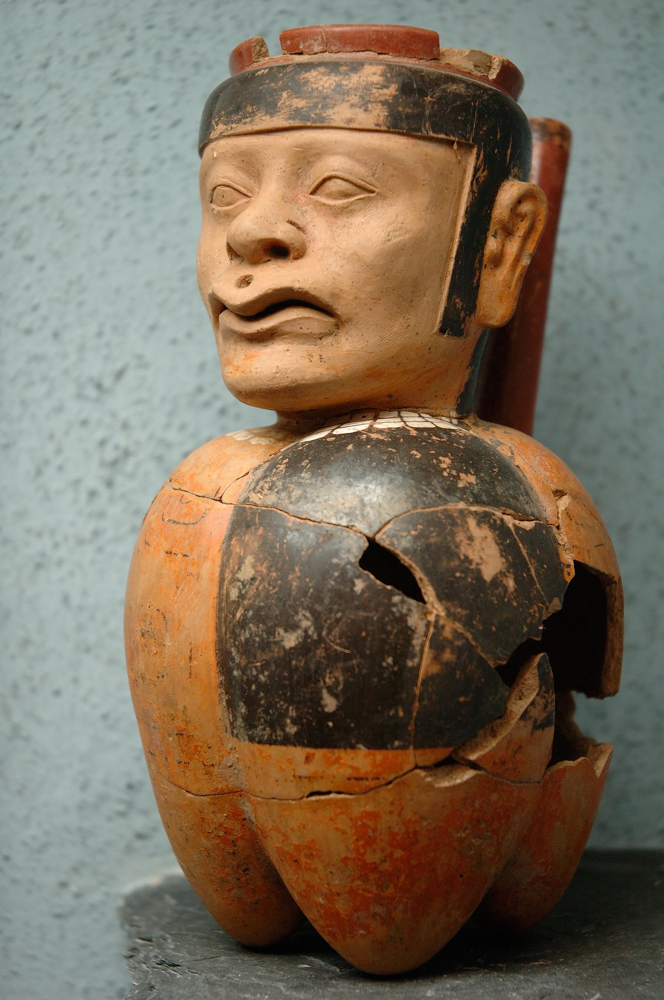

Dos aberturas del torso · reconstrucción aproximada en 2D. El color es una propuesta, no material original recuperado.
Coordenadas aproximadas en una referencia de 1280 × 1924 píxeles. Son puntos elegidos visualmente; la forma y el color del material perdido son hipótesis.